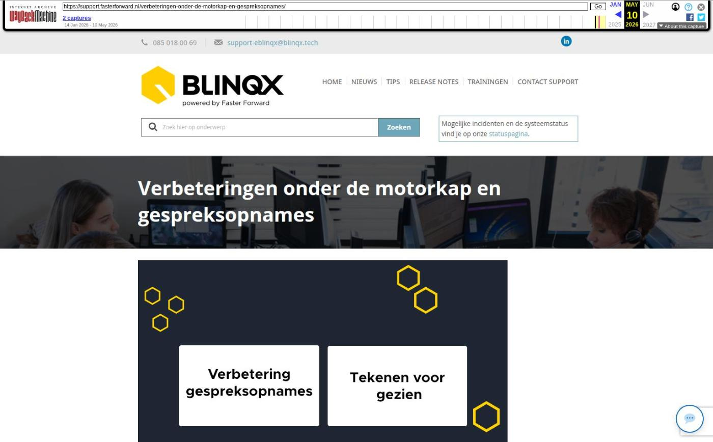

Verbeteringen onder de motorkap en gespreksopnames

Tekstinhoud
Op dinsdag 13 januari zijn Elements en eBlinqx weer verbeterd en uitgebreid met nieuwe features. Deze release bevat verbeteringen onder de motorkap en een verbetering gespreksopnames.
eBlinqx Only
Gespreksopname opnieuw indienen
Documenten tekenen voor gezien beschikbaar voor acceptant en behandelaar
Pilot koppelen e-mail door middel van AI
Elements en eBlinqx
Verbeteringen onder de motorkap
Overige verbeterpunten
eBlinqx Only
Gespreksopname opnieuw indienen
Let op: alleen beschikbaar in eBlinqx
Vanaf nu kan je zelf de gespreksopname opnieuw indienen mocht het de eerste keer niet gelukt zijn om deze goed om te zetten naar transcript. Bij de gespreksopname komt hiervoor een retry-icoon te staan en je wordt erop geattendeerd door middel van een blauwe melding. Deze knop is niet beschikbaar als er al een transcript is en het originele verzoek nog geen 5 minuten geleden is.
Documenten tekenen voor gezien beschikbaar voor acceptant en behandelaar
Let op: alleen beschikbaar in eBlinqx
Het is nu ook mogelijk om het document te tekenen voor gezien als je de functie acceptant of behandelaar hebt. Voorheen was dit alleen mogelijk met de functie adviseur.
Pilot koppelen e-mail door middel van AI
Let op: alleen beschikbaar in eBlinqx
Op dit moment zijn we bezig met het ontwikkelen van het automatisch koppelen van e-mails door middel van AI. Bij deze automatische toewijzing kijken we niet langer alleen naar het onderwerp (bijvoorbeeld met #D) of het unieke e-mailadres. Met behulp van AI wordt ook de inhoud van de e-mail geanalyseerd om te bepalen of deze aan het dossier of product kan worden gekoppeld. Hierdoor worden e-mails sneller bij de juiste producten en/of schademeldingen ondergebracht. Daarnaast worden e-mails van bijvoorbeeld geldverstrekkers en notarissen voortaan automatisch aan het juiste dossier of product toegekend.
We willen een pilot draaien om deze ontwikkeling te testen. Het kan zijn dat je hiervoor wordt benaderd.
Elements en eBlinqx
Verbeteringen onder de motorkap
De softwaretechnieken van Elements en eBlinqx zijn weer verder vernieuwd. We hebben hier verdere verbeteringen op doorgevoerd. Ondanks dat je hier niets van merkt, is deze vernieuwing erg belangrijk.
Hierdoor kunnen we namelijk nieuwe innovaties blijven implementeren, omdat we gebruikmaken van de nieuwste software. Bovendien blijft de veiligheid gewaarborgd. Dit geldt zowel voor Elements en eBlinqx als voor alle koppelingen en exports, zoals klantportalen, adviespakketten, Excel en verbindingen met geldverstrekkers en verzekeraars.
Overige verbeterpunten
De klant kan nu verschillende documenttypen als bijlage uploaden wanneer hij een bericht verstuurt via Uwkluis. Voorheen was het alleen mogelijk om een pdf als bijlage mee te sturen. Dit geldt niet voor het uploaden van documenten onder de openstaande verzoeken/stukken
Wij hebben diverse verbeteringen voor onze interne conversietool doorgevoerd. Hierdoor wordt de doorstroom van de conversies verbeterd
Het is nu ook mogelijk om informatieberichten (IA) via HDN te versturen naar Attens Hypotheken, Centraal Beheer, Woonfonds, Syntrus Achmea, Dynamic Credit, bijBouwe en Tellius Hypotheken
De rapportage CRM – Dossiers met organisaties obv contactpersonen is uitgebreid met de kolom Contactpersoon functie. Wil je de kolom zien in de rapportage, zet deze dan aan via Rapportagebeheer
In de workflowactie betalingsoverzicht maken en per e-mail versturen kan je nu aangeven dat de originele facturen niet mee worden gestuurd. Hierdoor wordt het PDF bestand met daarin het betalingsoverzicht geen groot bestand en kan je deze per e-mail versturen. Daarnaast is er een nieuwe tag betalingsoverzicht->specificatie met productinformatie die extra informatie weergeeft die normaliter op de factuur staat
Bij relaties andere dossiers kan je nu ook direct zien of de betreffende persoon is overleden
Geplaatst op 9 januari 2026
Laatste 5 releasenotes
Nog meer data en documenten vergelijken »
Gemakkelijk data en documenten vergelijken »
Verbeteringen boekhouding en facturatie »
Verbeteringen gespreksopname en onder de motorkap »
Verbeteringen onder de motorkap en gespreksopnames »